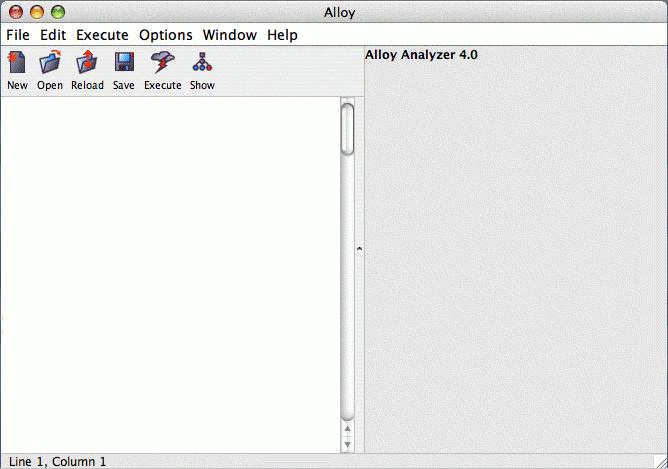
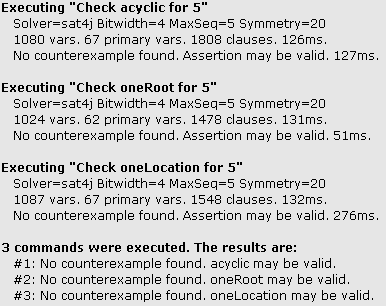
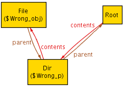
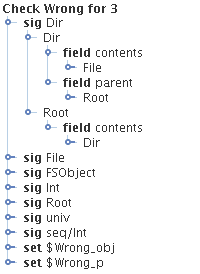
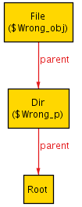
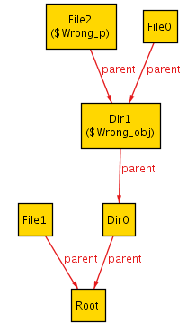
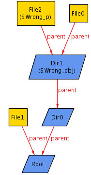

In this lesson, we take a look at the Alloy interface itself. We will walkthrough the basics of how to execute a command to check an Alloy model and how to interpret the results. We will continue to use our running sample model of a File system, and execute the check statements to verify the assertions made in the first version of the model.
The exact output that Alloy gives you (the messages that pop up, and the interface to the visualizer) is subject to change. However, the basics of using the Alloy interface (what you can tell Alloy to do, the terminology we use, and the kind of information Alloy returns) remains constant. This walkthrough analyzes our File System example, and to show examples of what the resulting output and visualizations might look like. If you need additional help, or to report/clarify an inconsistency, feel free to contact us.
At this point, you should open Alloy. If you do not already have Alloy installed, you can downloaded it from the from the Alloy home page. Once you get Alloy up and running, you will be presented with a screen with two sections, looking something like this:


In general, once you make a change to the model and want to see its effect on a run or a check, just execute that command again. You do not need to click save first, since the Alloy Analyzer will always use the text editor's version rather than the version on disk.
We'll see an example of visualizing a solution next.
Just for fun, let's write and check an assertion which does have a solution (i.e. a counterexample).
// an assertion with a counterexample assert Wrong { all obj, p: (FSObject - Root) | (obj.parent = p.parent) }
That is, we are claiming that any two non-root file system objects have the same parent. Of course, if our file system is at all sane, then this assertion will fail and a counterexample will be found. Let's check it and see.
check Wrong for 3
Save the model, select our latest command from the Execute menu, and execute it. Alloy Analyzer will find a counterexample. Click on it, and a new window will open up with a diagram similar to this:

You can also browse a tree structure of the model by selecting the "tree" button from the toolbar. The tree view allows you to see how the signatures and fields in your model evaluated in this particular solution. You can return to the diagram view by choosing the "viz" button from the toolbar.

The exact appearance (and even the counter-example returned) may vary between versions of Alloy, so don't worry if it looks a little different. Everything we say here will still apply.
You can make the visualization more readable by customizing the layout. You do this by clicking the "Theme" button from the toolbar. You can adjust what relations and sets are shown, and the style of their presentation. Here is a cleaner customization by clicking on the "contents" relationship and setting its "Show as Arc" checkbox to false.

Now let's see what happens what would have happened if we'd chosen a smaller scope:
check Wrong for 2
Whoops! No solutions were found. If the scope is too small,
there may be no solutions found, just because the smallest
solution is larger than you allowed. This is an unavoidable risk
of Model Checking, but it is mitigated by the "small scope
hypothesis". Alloy does guarantee that if there is
any example within the specified scope that an example will be
returned to the user. If there are several, you may not get the
smallest one, so it is often helpful to try smaller and smaller
scopes to find the smallest scope that still generates a solution.
check Wrong for 15
We might get a solution such as this one:

Or, with some minor customizations (by setting Dir to be blue parallelograms), we get the much more readable:

If you've gotten different results than we show here, don't be alarmed; it may be because you have a different version of Alloy, or it may be because of Alloy's non-deterministic nature. That is, Alloy only guarantees that it will return a solution, not the smallest and not even necessarily the same one each time.
While a fact is used to force something to be true of the model, an assert is a claim that something must already be true due to the rest of the model. There are three ways of thinking about this difference, which are worth reading through even if you think the difference is obvious.
One way of examining this difference is considering what happens if you accidentally write a constraint which is trivially false.
Another way is to consider what happens if you mistakenly write a constraint with one construct when you should have used the other.
Yet another way to think about the difference is in terms of their interaction.
Before proceeding to the second version of the File System example, it is a good idea to read about the three levels of abstraction for reading an Alloy model, if you have not already done so. You have now had enough opportunity to play around with Alloy to benefit from seeing different ways of looking at it.